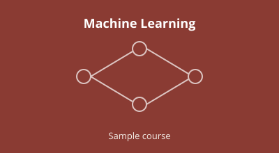

Introduction to Machine Learning
Foundations of supervised and unsupervised learning: linear models, decision trees, neural networks, evaluation, and a capstone project that takes a dataset from raw data to a deployed model.
- Models
- Evaluation
- Projects